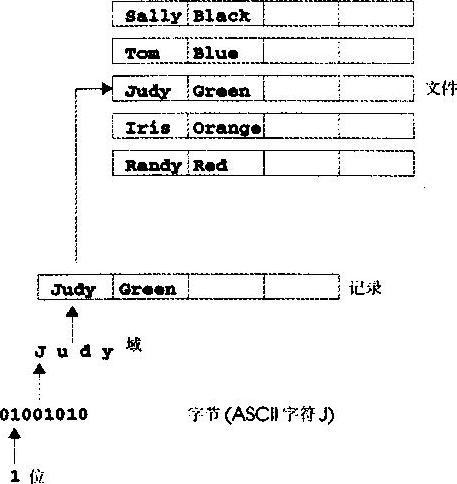

教学目标
●能够建立、读写和更新文件
●熟悉顺序访问文件的处理方式
●熟悉随机访问文件的处理方式s
●指定高性能无格式的I/O操作s
●了解格式化与“原始数据”文件处理的差别
●用随机访问文件处理建立事务处理程序
存储在变量和数组中的数据是临时的，这些数据在程序运行结束后都会消失。文件用来永久地保存大量的数据。计算机把文件存储在二级存储设备中(特别是磁盘存储设备)。本章要讨论怎样用C++程序建立、更新和处理数据文件(包括顺序存储文件和随机访问文件)。我们要比较格式化与“原始数据”文件处理。第19章将介绍从string而不是从文件输入和输出数据。
计算机处理的所有数据项最终都是0和1的组合。采用这种组合方式是因为它非常简单，并且能够经济地制造表示两种稳定状态的电子设备(一种状态代表1，另一种状态代表0)。计算机所完成的复杂功能仅仅涉及最基本的对0和1的操作。
0和1可以认为是计算机中的最小数据项，人们称之为“位”(bit)。bit是binary digit(二进制数字)的缩写，一个二进制数字是0和1的两个值之一。计算机电路完成各种简单的位操作，如确定某个位的值、设置某个位的值和反转某个位的值(0变为1，1变为0)等等。
程序员如果以底层位的形式处理数据会感到很麻烦，所以更喜欢用十进制数字(即0、1、2、3、4、5、6、7、8和9)、字母(即A~Z和a—z)和专门的符号(即$、@、％、＆、*、(、)、-、+、”、：、、／等等)处理数据。数字、字母和专门的符号称为“字符”(character)。能够在特定计算机上用来编写程序和代表数据项的所有字符的集合称为“字符集”(character set)。因为计算机只能处理1和0，所以计算机字符集中的每一个字符都是用称为“字节”(byte)的0、1序列表示的。目前最常见的是用8位构成一个字节。程序员以字符为单位建立程序和数据项，计算机按位模式操作和处理这些字符。
就像字符是由位构成的，域(field)是由字符构成的。一个域就是一组有意义的字符。例如，一个仅仅包含大写字母和小写字母的域可用来表示某人的名字。
计算机处理的数据项构成了“数据的层次”(data hierarchy)。在这个结构中，数据项从位到字符再到域是越来越大、越来越复杂。
记录(即C语言中的结构)是由多个域构成(在C++中称为成员)。例如，在一张工资表中，为某个特定雇员建立的一条记录可能是由如下域组成的：
1. 雇员标识号
2. 名字
3．地址
4．每小时工资等级
5. 免税申请号
6. 年度收入
7. 联邦税收额等等
因此，一条记录是一组相关的域。在上面的例于中，每一个域都针对同一个雇员。当然，特定的公司会有许多雇员，所以要为每一个雇员建立一个工资表(记录)。一个文件就是一组相关的记录。某个公司的工资表文件通常包含为每一个雇员建立的记录。较小公司的工资表文件可能只包含22条记录，而大型公司的工资表文件可能要包含100 000条记录。一个机构建立成百上千个文件，而每一个文件又包含几百万甚至几十亿个字符信息，这是不值得奇怪的。图14.1反映了数据的层次。
为了检索文件中指定的记录，每个记录中至少要选出一个域作为“记录关键字”(record key)。记录关键字标识了属于某人或某个实体的记录。例如，在本节的工资表记录中，“雇员标识号”通常选作记录关键字。
文件中的记录有多种组织方式。最常见的组织方式是按记录关键字字段的顺序存储记录，接这种方式存储记录的文件称为“顺序文件”(sequential file)。在工资表文件中．记录通常按雇员标识号的顺序存储。在第一个雇员的记录中，该雇员的雇员标识号最小，其后的记录中包含的雇员标识号依次递增。
多数商业机构要用许多文件来存储数据。例如，公司里可能要有工资表文件、应收账目文件(列出客户的欠款)、应付账目文件(列出欠供应商的金额)、存货文件(列出经商的货物)和其他多种类型的文件。有时把一组相关的文件称为“数据库”(database)。为建立和管理数据库而设计的文件集合称为“数据库管理系统”(DBMS)。